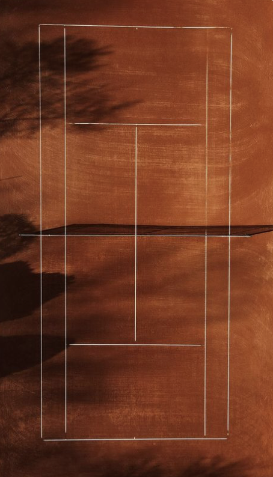

Welcome to this quick review game about tennis where you can find out more about the court

The baseline in tennis serves as the fundamental boundary of the court, marking the rear limit of the playing area. It extends parallel to the net, connecting the service lines on both sides. Players start their serves behind the baseline, within the designated service boxes. Throughout a match, the baseline is strategically utilized by players, who may position themselves behind it to defend against powerful shots or move forward to capitalize on shorter balls. Additionally, groundstroke shots, which are essential in tennis, are often executed from or near the baseline. Overall, the baseline plays a pivotal role in defining the court's dimensions and is integral to the tactics employed by players during gameplay.
In tennis, the out hall, also known as the "out-of-bounds" area, encompasses the regions outside the designated playing lines of the court. Serving as the boundaries beyond which shots are considered out, this area plays a pivotal role in determining the legality of shots during matches. Players strategically aim to keep their shots within the confines of the playing area, avoiding the out hall to score points and maintain control of rallies. Conversely, shots landing in the out hall result in points awarded to the opposing player, emphasizing the importance of accuracy and placement in tennis gameplay. Furthermore, players may exploit the out hall by strategically directing shots to force opponents out of position or capitalize on open spaces, thereby gaining a competitive advantage. Understanding and effectively utilizing the out hall is essential for players seeking to optimize their shot selection and tactical approach, as it significantly influences the outcome of points and matches.
The net in tennis stands as a central element that divides the court into two equal halves, serving as both a barrier and a tactical asset for players. Beyond merely demarcating the playing area, the net plays a crucial role in various aspects of gameplay, particularly in facilitating strategic shots like the volley and smash. Players often employ the volley, a quick shot executed near the net, to seize control of the point and apply pressure on opponents. Meanwhile, the smash, an aggressive overhead shot executed close to the net, is a potent offensive weapon utilized to deliver decisive winners. Mastering these techniques requires precision and timing, as players seek to exploit opportunities created by their opponents' positioning and shot selections. Moreover, adept net play demands quick reflexes and adaptability, as players must swiftly transition between defensive and offensive postures to maintain control of the rally. Ultimately, the net stands as both a physical obstacle and a strategic focal point, shaping the dynamic flow of exchanges and highlighting the multifaceted nature of tennis gameplay.
The service line in tennis marks the boundary between the service box and the rest of the court, playing a critical role in serving and receiving during matches. Positioned parallel to the net, halfway between the baseline and the net. Furthermore, the service line influences players' tactical decisions, as servers may strategically target specific areas of the service box to exploit opponents' weaknesses or gain a competitive edge. Overall, the service line serves as a fundamental component of tennis gameplay, shaping the dynamics of serves and returns while contributing to the strategic depth of the sport.
Tennis Quiz
1. What is the scoring system in tennis called?
PointsSetsGames
2. How many points does a player need to win a game?
564
3. What is the term for a shot hit before the ball bounces on the court?